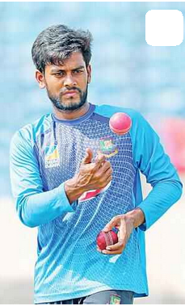
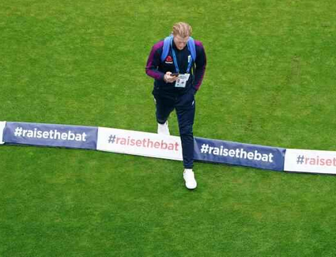
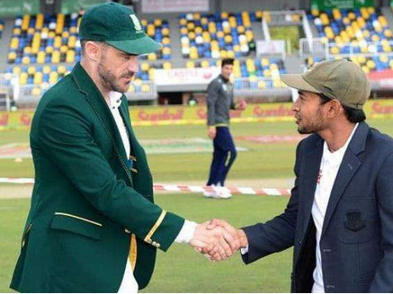
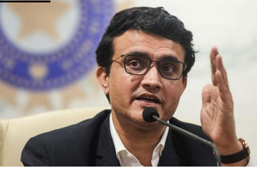
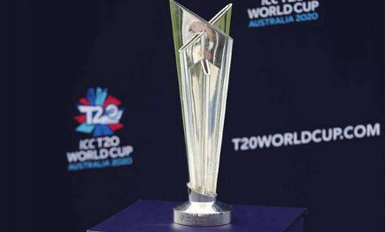
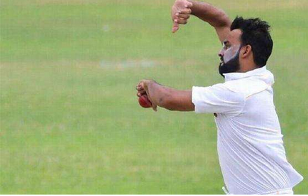
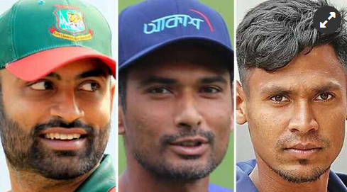
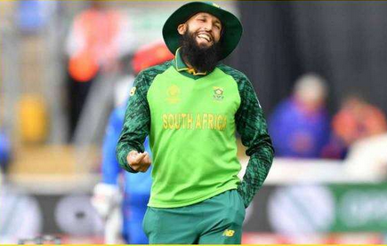

| News-portal360 |
|---|
১৯ জুলাই
অল্পের জন্য উইজডেনের অনূর্ধ্ব-২৫ টেস্ট দলে নেই মিরাজ

অল্পের জন্য উইজডেনের অনূর্ধ্ব-২৫ টেস্ট দল থেকে বাদ পড়েছেন মেহেদী হাসান মিরাজ। বিশ্বের ২৫ বছর বা তার কম বয়সী ক্রিকেটারদের মধ্য থেকে সেরা টেস্ট একাদশ বেছে নিয়েছে ক্রিকেটের বাইবেলখ্যাত সাময়িকী উইজডেন। একাদশ তো ঘোষণা করেছেই, যাঁরা তাঁদের বিবেচনায় থাকলেও অল্পের জন্য জায়গা পাননি, তাঁদের নামও জানিয়ে দিয়েছে উইজডেন। সেখানেই এল বাংলাদেশের অফস্পিনার মেহেদী হাসান মিরাজের নাম। তালিকায় দ্বিতীয় স্থানেই আছে অলরাউন্ডার মেহেদী হাসান মিরাজের নাম। বাদ পড়াদের তালিকার প্রথমে আছেন টেস্ট অভিষেকেই ওয়েস্ট ইন্ডিজের বিপক্ষে ১৩৪ রান করা ভারতের ২০ বছর বয়সী ব্যাটসম্যান পৃথ্বী শ। এরপরই আছেন মিরাজ। রশিদ খানকে মূল দলে জায়গা দিতেই তাঁকে বাদ দিতে হয়েছে বলে জানিয়েছে উইজডেন। নির্ভুল লাইন লেংথই মিরাজের মূল অস্ত্র। বিশেষ করে পিচে যদি স্পিনারদের জন্য বিন্দুমাত্র সাহায্য থেকে থাকে, মিরাজ হয়ে ওঠেন অনবদ্য। বয়স ১৯ ছোঁয়ার আগেই টেস্ট দলে ঢোকেন। অভিষেক হয়েছিল চট্টগ্রামে। ইংল্যান্ডের বিপক্ষে অভিষেক টেস্টেই বাজিমাত, প্রথম ইনিংসেই ৬ উইকেট! সেই টেস্টটা বাংলাদেশ জয়ের সম্ভাবনা জাগিয়েও ২২ রানে হেরে যায়। ঢাকায় দ্বিতীয় টেস্ট পুরোটাই মিরাজময়। দুই ইনিংসে ৬টি করে উইকেট তাঁর, বাংলাদেশ প্রথমবারের মতো টেস্টে হারায় ইংল্যান্ডকে! দুই টেস্টের সেই সিরিজে মিরাজ পেয়েছিলেন ১৯ উইকেট। ২২ বছর বয়সী মিরাজ ২২ টেস্টে এরই মধ্যে নিয়েছেন ৯০ উইকেট। আর মাত্র ১০টা উইকেট পেলেই চতুর্থ বাংলাদেশি বোলার হিসেবে টেস্টে ১০০ উইকেটের মাইলফলক ছোঁবেন। এখন পর্যন্ত মিরাজের সেরা পারফরম্যান্স ৫৮ রানে ৭ উইকেট। তাঁকে নিয়ে উইজডেন লিখেছে, ‘অভিষেক সিরিজে ইংল্যান্ডের বিপক্ষে তাঁর ঘূর্ণিজাল ছড়িয়ে, দুই টেস্টে ১৯ উইকেট নিয়ে তাঁর আগমনের প্রায় চার বছর হয়ে গেছে। (উইজডেনের দলে) রশিদ খান, যাঁকে বিচারক প্যানেল দলে পাঁচ জনের বোলিং আক্রমণে স্বাধীনতা দিতে চেয়েছে, তাঁর কাছে অল্প ব্যবধানে হেরে গেছেন মিরাজ। মাত্র ২২ বছর বয়স তাঁর, এরই মধ্যে দুবার ম্যাচে ১২ উইকেট পেয়েছেন, চতুর্থ বাংলাদেশি হিসেবে টেস্টে ১০০ উইকেটের মাইলফলকে পৌঁছানোর আর মাত্র দশ উইকেট দূরত্বে তিনি।’ মিরাজ আর শ ছাড়াও বাদ পড়াদের মধ্যে আরও আছেন পাকিস্তানের নাসিম শাহ, ওয়েস্ট ইন্ডিজের আলজারি যোশেফ, দক্ষিণ আফ্রিকার লুঙ্গি এনগিডি, আফগানিস্তানের ইব্রাহিম জাদরান, ওয়েস্ট ইন্ডিজের শিমরন হেটমায়ার, শ্রীলঙ্কার লাসিথ এমবুল্দেনিয়া, অস্ট্রেলিয়ার ঝাই রিচার্ডসন ও ভারতের কুলদীপ যাদব। আর দলে কারা সুযোগ পেয়েছেন? পরিচিত সব নামই সেখানে। অধিনায়ক পাকিস্তানের বাবর আজম। দলটা দেখে নিন: উইজডেনের অনূর্ধ্ব-২৫ বিশ্ব টেস্ট একাদশ: এইডেন মার্করাম (দক্ষিণ আফ্রিকা), ডম সিবলি (ইংল্যান্ড), কুশল মেন্ডিস (শ্রীলঙ্কা), বাবর আজম (পাকিস্তান)—অধিনায়ক, ওলি পোপ (ইংল্যান্ড), ঋষভ পন্ত (ভারত)—উইকেটকিপার, স্যাম কারেন (ইংল্যান্ড), রশিদ খান (আফগানিস্তান), জফরা আর্চার (ইংল্যান্ড), কাগিসো রাবাদা (দক্ষিণ আফ্রিকা) ও শাহিন শাহ আফ্রিদি (পাকিস্তান)।

বৃষ্টি কঠিন করে দিল স্টোকসদের কাজটা
বৃষ্টিতে ভেসে গেল ওল্ড ট্রাফোর্ড টেস্টের তৃতীয় দিন। বাকি দুদিনে ওয়েস্ট ইন্ডিজের ১৯ উইকেট নেওয়া কঠিন মনে করছেন বেন স্টোকস। সাউদাম্পটনে হারার পর ইংল্যান্ডের সামনে সুযোগ এসেছিল ওল্ড ট্রাফোর্ড টেস্ট জিতে সিরিজে সমতা ফেরানোর। সেই পথে বেশ কিছুটা এগিয়েও ছিল ইংল্যান্ড। কিন্তু বৃষ্টি এসে এখন কাজটা কঠিন করে দিল জো রুট-বেন স্টোকসদের। ক্রিকেটের চিরশত্রু বৃষ্টির কারণে আজ তৃতীয় দিনে একটি বলও গড়ায়নি ওল্ড ট্রাফোর্ডে। ম্যানচেস্টারের স্থানীয় সময় বিকেল ৪টার দিকে দিনটা পরিত্যক্ত ঘোষণা করেন আম্পায়াররা। প্রথম ইনিংসে ইংল্যান্ড ৯ উইকেটে ৪৬৯ রান করে ইনিংস ঘোষণার পর ওয়েস্ট ইন্ডিজ ১ উইকেটে তুলেছে ৩২ রান। ফলো অন এড়াতে আরও ২৩৮ রান দরকার। কিন্তু অতিথিদের ফলো অনে ফেলেও যে বাকি দুই দিনে ম্যাচ জেতা কঠিন হয়ে যাবে, সেটা স্বীকার করছেন প্রথম ইনিংসে ১৭৬ রানের দারুণ ইনিংস খেলা ইংলিশ অলরাউন্ডার বেন স্টোকস। বৃষ্টিবিঘ্নিত দিনের একফাঁকে স্কাই স্পোর্টসের সঙ্গে এক সাক্ষাৎকারে বলেছেন, ‘পরিস্থিতিটা আমাদের জন্য আদর্শ নয়। আবহাওয়া দেখে যা মনে হচ্ছে, আমাদের হয়তো বাকি দুই দিনে ১৯ উইকেট নেওয়ার চেষ্টা করতে হবে।’ কাল আরও ওভার বিশেক আগে ইনিংস ঘোষণা করে দিলে কিছুটা লাভ হতো কি না, সেই প্রশ্ন তুলেছেন অনেকে। তাতে হয়তো ওয়েস্ট ইন্ডিজের কয়েকটা উইকেট ফেলে চাপে রাখার সুযোগ পাওয়া যেত। স্টোকস অবশ্য সেই বিতর্কে গেলেন না। সিরিজের প্রথম টেস্টে জো রুটের অনুপস্থিতিতে ইংল্যান্ডকে নেতৃত্ব দিয়ে হারা বেন স্টোকস এখনই হাল ছাড়ছেন না, ‘উইকেটে কিছু আছে, যা এখন পর্যন্ত বোলারদের সাহায্য করেছে কিছুটা। আমাদের চেষ্টা থাকবে সেটা কাজে লাগানোর।’ আর এ জন্য নিজেদের বোলিং আক্রমণে আস্থা রাখতে চাইছেন ইংলিশ অলরাউন্ডার, ‘আমাদের যে বোলিং আক্রমণ, খেলা একবার শুরু হলে যেকোনো কিছুই সম্ভব।’
যে 'রেকর্ডে' হোল্ডারদের ওপরে শুধু বাংলাদেশ

২০১৫ সালের অক্টোবর থেকে টেস্টে তিন বার টস জিতে ফিল্ডিং নিয়ে তিনবারই হেরেছে বাংলাদেশ। 'টসে জিতে ব্যাটিং নাও। যদি মনে কোনো দ্বিধা থাকে, তাহলে একটু ভাবতে পার। তারপর ব্যাটিং নাও।' ডব্লিউ জি গ্রেসের কথাটা মানলেন না জেসন হোল্ডার। কাল ওল্ড ট্রাফোর্ডে টস জিতেই ক্রিকেটের অমর বুড়োকে কথা অমান্য করে ফিল্ডিং নিয়ে নিলেন ওয়েস্ট ইন্ডিজ অধিনায়ক। তাতে ওল্ড ট্রাফোর্ডকে ফিরে যেতে হলো সেই ১৯৯৩ সালে। ওই মাঠে যে এরপর গত ২৭ বছরে আর কোনো অধিনায়ক টস জিতে ফিল্ডিং নেননি। ৮১ রানে ইংল্যান্ডের প্রথম ৩ উইকেট তুলে নিয়ে অধিনায়কের সিদ্ধান্তকে ঠিক প্রমাণ করার দায়িত্বটা ভালোই পালন করছিলেন রোস্টন চেজ–আলজারি জোসেফরা। কিন্তু ম্যানচেস্টারের শেষ বিকেলে হোল্ডারের সিদ্ধান্তের যৌক্তিকতাকে প্রশ্নবিদ্ধ করে দিলেন ডম সিবলি ও বেন স্টোকস। আর কোনো উইকেট না হারিয়েই ইংল্যান্ড দিন শেষ করেছিল ২০৭ রানে। জেসন হোল্ডার অবশ্য টস জিতলে ফিল্ডিং নেওয়াটাই ভালো মনে করেন আজকাল। ২০১৯ সালের শুরু থেকে সর্বশেষ যে ছয় টেস্টে টস জিতেছেন তার পাঁচটিতেই প্রথমে ফিল্ডিং নিয়েছেন হোল্ডার। এর দুটিতে জিতেছে ওয়েস্ট ইন্ডিজ, হেরেছেও দুটিতে। এবার ওল্ড ট্রাফোর্ডে হার না জিত-কে এগিয়ে যাবে কে জানে! হোল্ডার ওয়েস্ট ইন্ডিজের অধিনায়ক হয়েছেন ২০১৫ সালের অক্টোবরে। সেই সময় থেকে শুরু করে গত প্রায় পাঁচ বছরে ১১ বার টস জিতে ফিল্ডিং নিয়েছেন হোল্ডার। এই সময়ে ক্যারিবীয়দের চেয়ে টস জিতে বেশি ফিল্ডিং নিয়েছে শুধু একটি দল—নিউজিল্যান্ড। কিউইরা ওই ১৪ ম্যাচের ১০টিতেই জিতে অধিনায়কের সিদ্ধান্তের যৌক্তিকতাও প্রমাণ করেছে। কিন্তু ওয়েস্ট ইন্ডিজ? ওল্ড ট্রাফোর্ড টেস্টের আগে ১০ ম্যাচের মাত্র তিনটিতে জয় পাওয়া হোল্ডারের দল হেরেছে বাকি সাতটিতে। এই সময়ে টেস্টে টস জিতে ফিল্ডিং নিয়ে হারার রেকর্ডে ওয়েস্ট ইন্ডিজের ওপরে আছে শুধু বাংলাদেশ। তিনটি টেস্টে এমন সিদ্ধান্ত নিয়ে প্রতিবারই প্রায়শ্চিত্ত করতে হয়েছে। তিন ম্যাচের দুটিই আবার ২০১৭ সালের দক্ষিণ আফ্রিকা সফরে। ওই সিরিজে বাংলাদেশের অধিনায়ক ছিলেন মুশফিকুর রহিম। তৃতীয় ঘটনা ২০১৮ সালে ওয়েস্ট ইন্ডিজ সফরে কিংস্টনে। এবার অধিনায়কের নাম সাকিব আল হাসান। অন্যদিকে সাফল্যের বিচারে নিউজিল্যান্ডের ঠিক পরেই রাখতে হয় দক্ষিণ আফ্রিকাকে। চার ম্যাচে টস জিতে ফিল্ডিং নিয়ে তিনটিতেই যে জিতেছে প্রোটিয়ারা।

৪৮০০ কোটি রূপি গচ্ছা দেওয়ার মুখে ভারতীয় বোর্ড
কত বড় বিষয় নিয়ে আজ সভায় বসার কথা ভারতীয় ক্রিকেট নিয়ন্ত্রক সংস্থার (বিসিসিআই)। আইপিএলের ভাগ্য নির্ধারিত হতে পারে আজ। পাশাপাশি ভারতের ভবিষ্যত সফর পরিকল্পনা নিয়ে আলোচনা হবে। আলোচনা হওয়ার কথা ভারতে অনুষ্ঠিতব্য ২০২১ টি-টোয়েন্টি বিশ্বকাপ ও ২০২৩ ওয়ানডে বিশ্বকাপের কর রেয়াতের বিষয় নিয়ে যে বিসিসিআইয়ের সঙ্গে লেগেছে আইসিসির, সেটি নিয়েও। এখন আলোচ্যসূচিতে আরেকটি বিষয় সম্ভবত যোগ হয়ে গেল। বিসিসিআই যে ৪৮০০ কোটি রূপি গচ্ছা দেওয়ার মুখে! ২০১২ সালে আইপিএলের সাবেক ফ্র্যাঞ্চাইজি ডেকান চার্জার্সের ফ্র্যাঞ্চাইজি সত্ত্ব বাতিল করে বিসিসিআই। এতদিন পর মুম্বাইয়ের সুপ্রিম কোর্ট নিয়োজিত মধ্যস্থতাকারীর রায়, সেটি অবৈধ ছিল। সে কারণে এখন ডেকান চার্জার্সকে ক্ষতিপূরণ হিসেবে ৪৮০০ কোটি রূপি দেওয়ার নির্দেশ দেওয়া হয়েছে বিসিসিআইকে। ২০০৮ সালে যে আটটি দল নিয়ে মূলত শুরু হয়েছিল আইপিএল, তার একটি ছিল ডেকান ক্রনিকল হোল্ডিংস লিমিটেডের (ডিসিএইসএল) মালিকানাধীন ডেকান চার্জার্স। ২০০৯ সালে অস্ট্রেলিয়ান কিংবদন্তি উইকেটকিপার অ্যাডাম গিলক্রিস্টের অধিনায়কত্বে শিরোপাও জেতে। কিন্তু খেলোয়াড়দের বেতন ঠিকমতো না দেওয়াসহ নানা অভিযোগে ২০১২ সালে সেটির সত্ত্ব বাতিল করে বিসিসিআই। পাশাপাশি বিসিসিআই তখন এ-ও দাবি করে যে, ফ্র্যাঞ্চাইজিটি বিসিসিআইয়ের নীতিমালা ভেঙেছে। ডিসিএইচএল সে সময় ফ্র্যাঞ্চাইজিটি নিলামেও তোলারও চেষ্টা করেছে, কিন্তু পিভিপি ভেনচারসের কাছ থেকে একমাত্র বিডটি নাকচ করে দেয়। পরে বিসিসিআই ফ্র্যাঞ্চাইজিটিকে নিষিদ্ধ করে তাদের সব খেলোয়াড়কে নিলামে নিয়ে নেয়। সত্ত্ব বাতিলের সিদ্ধান্তের বিরুদ্ধে ডিসিএইচএল তখন সুপ্রিম কোর্টের কাছে যায়। এর মধ্যে বোর্ড ততদিনে ফ্র্যাঞ্চাইজিটিকে আবার নিলামে তোলে। ফ্র্যাঞ্চাইজিটি পরে চেন্নাইভিত্তিক সংবাদমাধ্যম সান নেটওয়ার্কের কাছে বিক্রি করা হয়, যেটি এখন সানরাইজার্স হায়দরাবাদ নামে পরিচিত। সুপ্রিম কোর্ট ততদিনে অবসরপ্রাপ্ত বিচারক সিকে ঠাক্কারকে নিয়োগ দেন দুই পক্ষের মধ্যে মধ্যস্থতাকারী হিসেবে। এতদিন পর মধ্যস্থতাকারীর রায়ে জিতে গেছে ডিসিএইচএল। আগামী সেপ্টেম্বরের মধ্যে ডিসিএইচএলকে ৪৮০০ কোটি রুপি পরিশোধ করতে বিসিসিআইকে নির্দেশ দেওয়া হয়েছে। বিসিসিআই এই রায়ের বিরুদ্ধে আবার আদালতে যাবে বলে ধারণা করা হচ্ছে।
টি-টোয়েন্টি বিশ্বকাপ, আইপিএলের ভাগ্যে নতুন মোড়?

স্থগিত হতে যাচ্ছে টি-টোয়েন্টি বিশ্বকাপ, দুই মাস পর থেকেই শুরু হতে যাচ্ছে আইপিএল। এমনটাই জল্পনা-কল্পনা চলছে ভারতীয় সংবাদমাধ্যমে করোনা পরিস্থিতিতে একাধিক ক্রীড়া ইভেন্টের ভবিষ্যত নিয়ে দেখা দিয়েছে সংশয়। বিশেষ করে ক্রিকেটের। এ বছরের শেষ দিকে হওয়ার কথা ছিল টি-টোয়েন্টি বিশ্বকাপ। এতদিনে শেষ হয়ে যেত আইপিএলের ত্রয়োদশ মৌসুম। সবকিছুই থেমে আছে করোনার কারণে। কবে হবে টুর্নামেন্টগুলো? কেউ জানে না নিশ্চিতভাবে। এদিকে ভারতীয় সংবাদমাধ্যম অনুমান করছে, বছরের শেষ দিকে অস্ট্রেলিয়ায় অনুষ্ঠিত হতে যাওয়া টি-টোয়েন্টি বিশ্বকাপ শেষমেশ স্থগিত হয়ে যাবে। কিন্তু আইপিএল থামবে না। ভারতে না হলেও, সংযুক্ত আরব আমিরাতে আইপিএল পরিচালনা করার সিদ্ধান্ত দেবে বিসিসিআই, এমন জল্পনা-কল্পনাই চলছে ভারতের ক্রিকেটমহলে। আর সংযুক্ত আরব আমিরাতে আইপিএল হতে বেশি দেরি নেই আর। এই সেপ্টেম্বরেই আয়োজন করা হবে আইপিএল। সেপ্টেম্বর থেকে নভেম্বর পর্যন্ত সময়টায় আয়োজন করা হবে টুর্নামেন্টটি। সেপ্টেম্বরের মধ্যেই ওয়েস্ট ইন্ডিজ, ইংল্যান্ড, অস্ট্রেলিয়া ও নিউজিল্যান্ডের খেলোয়াড়েরা আন্তর্জাতিক ক্রিকেট খেলে ফেলবেন। ফলে আইপিএলে খেলতেও সমস্যা হবে না তাঁদের। ২০২০ আইপিএল বাতিল হয়ে গেলে চার হাজার কোটি রুপি লোকসানে পড়বে ভারতীয় ক্রিকেট বোর্ড।প্রত্যেক ফ্র্যাঞ্চাইজির ক্ষতি হবে ন্যূনতম ১০০ কোটি রুপি। তাই যে করেই হোক, আইপিএল আয়োজন করতে চাইছে ভারত। জানা গেছে, আইপিএলের আট মালিকপক্ষ এই সপ্তাহের শুরুতে সভা করে সিদ্ধান্ত নিয়েছেন, বিদেশে আইপিএল আয়োজন করা হলে কারওর কোনো সমস্যা নেই। প্রতি আসরে অন্তত চার হাজার কোটি রুপি করে লাভ হয় বিসিসিআইয়ের, বৈশ্বিক সম্প্রচার স্বত্ব ও স্পনসরদের কাছ থেকে পাওয়া অর্থ মিলিয়ে। যার বেশ বড় অংশ যায় আটটি ফ্র্যাঞ্চাইজির পকেটে। কেউই ১০০-১৫০ কোটি রুপির কম পায় না। এর আগেও যে বিদেশে আইপিএল হয়নি, তা নয়। আইপিএলের দ্বিতীয় মৌসুমই হয়েছিল দক্ষিণ আফ্রিকায়। ২০১৪ সালে লোকসভা নির্বাচনের জন্য আইপিএলের এক অংশ হয়েছিল সংযুক্ত আমিরাতেই।
ইংল্যান্ডে করোনামুক্ত পাকিস্তানি ক্রিকেটার

ইংল্যান্ডে গিয়ে করোনা পজিটিভি হওয়া পাকিস্তানি স্পিনার কাশিফ ভাট্টি অবশেষে করোনামুক্ত হয়েছেন পাকিস্তান থেকে ইংল্যান্ডগামী উড়ান ধরার আগে যে করোনা পরীক্ষা হয়েছিল, তাতে কাশিফ ভাট্টি নেগেটিভই হয়েছিলেন। কিন্তু ইংল্যান্ডে গিয়ে আবার করোনা ধরা পড়ে বাঁহাতি স্পিনারে। আজ আবার সুখবর পেলেন সেই ভাট্টি। ইংল্যান্ড অ্যান্ড ওয়েলস ক্রিকেট বোর্ড (ইসিবি) জানিয়েছে পরপর দুটি পরীক্ষায় নেগেটিভ হয়েছেন ভাট্টি। তাই আর দলের সঙ্গে যোগ দিতে বাধা নেই তাঁর। ইসিবির এক মুখপাত্র আজ ভাট্টিকে নিয়ে সুখবর দিলেন, 'খেলোয়াড়টির দ্বিতীয় পরীক্ষাতেও নেগেটিভ এসেছে। তাই অন্য খেলোয়াড় ও স্টাফদের সংক্রমিত হওয়ার শঙ্কা নেই।' ইংল্যান্ডে রওনা দেওয়ার আগে পিসিবির করানো পরীক্ষায় ভাট্টি দুবার কোভিড-১৯ নেগেটিভ হয়েছিলেন। এমনকি বিমানে উঠতে যে পরীক্ষা করিয়েছিলেন, সেখানেও নেগেটিভ এসেছিল। সেই তিনিই আবার জৈব নিরাপদ পরিবেশে ইসিবির করা পরীক্ষায় পজিটিভ হন! তখন তাঁকে নিয়ম মেনে দল থেকে বিচ্ছিন্ন হয়ে সঙ্গনিরোধ অবস্থায় রাখা হয়। ইসিবির এক মুখপাত্র বলেছেন,'ইংল্যান্ডের জনস্বাস্থ্য ও ভাইরাসবিদের ভাষ্য অনুযায়ী, আগে যে কোভিড-১৯ আক্রান্ত হয়েছিলেন, সেটি পুরোপুরি তাঁর শরীর থেকে যায়নি। নিরাপত্তা আগে, এটির ভিত্তিতে খেলোয়াড়কে আলাদা করে ফেলা হয়েছে।' সুসংবাদ পেয়েছেন আরেক পাকিস্তানি ক্রিকেটার হারিস রউফও। এর আগে তিনি পজিটিভ হলেও অনেকটাই সুস্থ হয়ে উঠেছেন। পিসিবি বলছে হারিস যদি আবারও নেগেটিভ হয় তবেই ২৬ বছর বয়সী পেসারকে পাঠানো হবে ইংল্যান্ডে।
সিপিএল এর অফার ফিরিয়ে দিল তামিম-মাহমুদউল্লাহ-মুস্তাফিজ

তামিমকে ৭৫ লাখ টাকায় কিনতে চেয়েছিল একটি ফ্র্যাঞ্চাইজি। মোস্তাফিজকে কিনতে চেয়েছিল ৬০ লাখ টাকায়। মাহমুদউল্লাহকে কত দামে কিনতে চেয়েছিল তা জানা যায়নি। আগামী মাসে ত্রিনিদাদে বসছে ক্যারিবিয়ান প্রিমিয়ার লিগের (সিপিএল) পরের আসর। দর্শকশূন্য স্টেডিয়ামে আয়োজন করতে যাওয়া ফ্র্যাঞ্চাইজি টি-টোয়েন্টি টুর্নামেন্টে খেলার প্রস্তাব পেয়েছিলেন বাংলাদেশের তিন ক্রিকেটার তামিম ইকবাল, মাহমুদউল্লাহ ও মোস্তাফিজুর রহমান। কিন্তু করোনা পরিস্থিতি ও ঢাকা প্রিমিয়ার ক্রিকেট লিগের কথা মাথায় রেখে তিনজনই ফিরিয়ে দিয়েছেন লোভনীয় সেই প্রস্তাব। বাংলাদেশের ওয়ানডে অধিনায়ক তামিম ইকবালকে ৭৫ লাখ টাকায় দলে নিতে চেয়েছিল একটি ফ্র্যাঞ্চাইজি। কিন্তু বাঁহাতি ওপেনার জানালেন, সবকিছু বিবেচনা করে ফিরিয়ে দিয়েছেন সেই প্রস্তাব, ‘অনেক কিছু ভাবতে হয়েছে। আমাদের দেশের করোনাভাইরাস পরিস্থিতি তো এখনো খুব একটা ভালো না। ওয়েস্ট ইন্ডিজ ও পুরো বিশ্বের বিমান যোগাযোগ এখনো স্বাভাবিক হয়নি। ঈদের পর ঢাকা প্রিমিয়ার লিগের খেলা যদি শুরু হয়—সেটিও ভাবতে হয়েছে।’ পেসার মোস্তাফিজুর রহমানকে দলে নিতে বাংলাদেশি মুদ্রায় ৬০ লাখ টাকা খরচ করতে রাজি ছিল আরেকটি ফ্র্যাঞ্চাইজি। কিন্তু প্রস্তাব ফিরিয়ে দিয়েছেন তিনিও। তামিমের মতো মোস্তাফিজও চাইছেন দেশের মাটিতে আগে খেলতে, ‘দেশের যে পরিস্থিতি, এই অবস্থায় কোথাও যাওয়া কঠিন। অনেকগুলো সিরিজ বাতিল হয়ে গেল। আশায় আছি, সামনে আবার হুট করে যদি কিছু হয়, এ কারণে দেশের হয়ে খেলার আগে কোথাও খেলতে চাইছি না। আর শুনেছি খেলা শুরু হলে, প্রিমিয়ার লিগ দিয়ে হতে পারে। ওটাও ভাবছি।’ টি-টোয়েন্টি অধিনায়ক মাহমুদউল্লাহও করোনার এই সময়ে ঝুঁকি নিয়ে ক্যারিবিয়ানে যেতে চান না। তাঁকে দলে নিতে কত টাকা খরচ করতে চেয়েছিল সিপিএলের ফ্র্যাঞ্চাইজি তা অবশ্য জানা যায়নি।

‘অত্যাচারিতদের পাশেই আছি’—সতীর্থের সমর্থনে আমলা
এনগিডির পাশে দাঁড়িয়েছেন হাশিম আমলা। ছবি: এএফপিজর্জ ফ্লয়েড হত্যাকাণ্ড ঘিরে বিশ্বজুড়ে প্রতিবাদ চলছেই। কিন্তু ‘ব্ল্যাক লাইভস ম্যাটার’ আন্দোলনের পক্ষে সরব হয়ে নিজ দেশেই সমালোচনার মুখে পড়েছেন দক্ষিণ আফ্রিকান পেসার লুঙ্গি এনগিডি। বোটা ডিপেনার, প্যাট সিমকক্সের মতো সাবেক ক্রিকেটাররা রীতিমতো তাঁর এই আন্দোলন নিয়ে হাজারো প্রশ্ন শুরু করেছেন। কিন্তু এনগিডির পাশে এসে দাঁড়িয়েছেন সতীর্থ হাশিম আমলা। জর্জ ফ্লয়েড হত্যার প্রতিবাদে এনগিডি কিছুদিন আগেই বলেছিলেন, ‘জাতি হিসেবে আমাদের বর্ণবৈষম্যের ইতিহাস রয়েছে। তাই অন্য দেশগুলোর মতো দল হিসেবে আমাদেরও এর প্রতিবাদ করা উচিত।’ দক্ষিণ আফ্রিকায় সাদা-কালোর বৈষম্য এখনো রয়ে গেছে, এনগিডির এমন মন্তব্যে সমর্থন করে এক বিবৃতিতে সই করেছেন সাবেক ও বর্তমান ৩১ জন ক্রিকেটার। এই তালিকায় অবশ্য হাশিম আমলার নাম নেই। কিন্তু ৩৭ বছর বয়সী এই ক্রিকেটার তাঁর ইনস্টাগ্রামে জানিয়েছেন, ‘সাদাদের চেয়ে কালো অথবা কালোদের চেয়ে সাদা শ্রেষ্ঠ কিংবা এক জাতির চেয়ে অন্য জাতি ভালো এটা শুধুই একটা ভ্রান্ত ধারণা। এ ছাড়া কিছুই না।’ অন্যরা যখন চুপ করে আছে তখন এনগিডি একাই এমন একটা সাহসী উদ্যোগ নিয়েছেন বলে প্রশংসা ঝরল আমলার কণ্ঠে, ‘আমিসহ আমাদের অনেকেই এই ভ্রান্তির কুফল ভোগ করেছেন, আমাদের অনেকেরই (বর্ণবাদ নিয়ে) অনেক ভয়ংকর গল্প আছে। তবে লুঙ্গি এনগিডির মতো ব্যতিক্রমী তরুণেরা আমাদের সবার হয়ে এই প্রশংসার কাজ করছে। ভাই তোমাকে ধন্যবাদ। গোপনে এবং প্রকাশ্যে যাঁরা এটার জন্য লড়ে যাচ্ছে সবাইকেই ধন্যবাদ।’ সারা বিশ্বের সকল নিপীড়িত মানুষের পক্ষেই আমলা, ‘এই দেশে, বিশ্বের সবখানে নিপীড়িত অনেক মানুষ আছেন। ক্রিকেটেও আছেন। এদের মধ্যে কালো চামড়ার মানুষেরাই বেশি খারাপ অবস্থায় আছেন। সবার জন্য ন্যায়বিচারই সত্যিকারের ন্যায়বিচার যা শান্তি বয়ে আনবে। এর অন্যথা যে কোনো কিছুই বিভ্রান্তিকর। সকল অত্যাচারিতের সঙ্গেই আছি আমি। আর আরেকবার বলছি, আমি (আন্দোলনে) এনগিডির পাশেই দাঁড়াচ্ছি।’ বিশ্বের বিভিন্ন খেলায় বর্ণবাদের বিরুদ্ধে প্রতিবাদ দেখে খুশি এনগিডি। হাঁটু গেড়ে বসে, জার্সিতে ব্ল্যাক লাইভস ম্যাটার লিখে ও ব্ল্যাক পাওয়ার স্যালুট দিয়ে বর্ণবাদবিরোধী আন্দোলনে নিজেদের সমর্থন দিয়ে যাচ্ছেন ক্রীড়াঙ্গনের মানুষেরা। এই যেমন গত সপ্তাহে সাউদাম্পটনে ইংল্যান্ডের বিপক্ষে ওয়েস্ট ইন্ডিজ প্রথম টেস্ট শুরুর আগে দুই দলই বর্ণবৈষম্যের বিরুদ্ধে প্রতিবাদ জানিয়েছে। ম্যাচে হোল্ডারদের টি শার্টে লেখা ছিল ব্ল্যাক লাইভস ম্যাটারের স্লোগান। এসব দেখে উচ্ছ্বসিত এনগিডি, ‘সব খেলার দিক থেকে ব্ল্যাক লাইভস ম্যাটার আন্দোলনকে সমর্থন দিতে দেখতে ভালো লাগে। ওয়েস্ট ইন্ডিজের খেলোয়াড়দের দেখেছি, হাতে কালো গ্লাভস পরা।’ ইংলিশ প্রিমিয়ার লিগেও এসব ম্যাচের আগে হাঁটু গেড়ে প্রতিবাদ জানাচ্ছেন খেলোয়াড়েরা। এগুলো এনগিডিকে এই আন্দোলন নিয়ে কাজ করতে আরও অনুপ্রেরণা জোগাচ্ছে, ‘এসব দেখে আবেগী হয়ে পড়ি। খুবই কঠিন একটা বছর এটা। শেষ পর্যন্ত মানুষ এসব নিয়ে কথা বলছে। ক্রিকেট বিশ্বকে এগিয়ে আসতে দেখাও আমার কাছে অনেক বড় কিছু। এটা আসলেই অনুপ্রেরণাদায়ী।’
অবশেষে করোনামুক্ত মাশরাফি
তিনদিন আগে বলেছিলেন, করোনামুক্ত হওয়ার খবর তিনি নিজেই জানাবেন। মাশরাফি বিন মুর্তজা স্বস্তির খবরটা আজ রাতে জানিয়েছেন। অবশেষে করোনা থেকে মুক্ত ওয়ানডেতে বাংলাদেশ দলের সবচেয়ে সফল অধিনায়ক। মাশরাফি কোভিড-১৯ আক্রান্ত হয়েছিলেন সপ্তাহ তিনেক আগে। মাঝে একবার পরীক্ষা করিয়েছিলেন যেটিতে আবারও ‘পজিটিভ’ আসে। তবে এবার তিনি পুরোপুরি করোনামুক্ত হয়ে সবার প্রতি কৃতজ্ঞতা জানিয়েছেন, ‘আল্লাহর রহমতে ও আপনাদের সবার দোয়ায় আমার করোনা ভাইরাস পরীক্ষার ফল এসেছে নেগেটিভ। আজকে রাতেই ফল জানতে পেরেছি। এই পুরো সময়টায় যারা পাশে ছিলেন, দোয়া করেছেন, অনেকে উদ্বিগ্ন ছিলেন ও নানাভাবে খোঁজ নিয়েছেন বা নেওয়ার চেষ্টা করেছেন, সবার প্রতি কৃতজ্ঞতা।’ নিজে করোনামুক্ত হলেও তাঁর স্ত্রী সুমনা হকের আরেকটু সময় লাগবে বলে জানিয়েছেন মাশরাফি, ‘শনাক্ত হওয়ার দুই সপ্তাহের বেশি সময় পেরিয়ে গেলেও আমার স্ত্রীর করোনাভাইরাস পরীক্ষার ফল এখনো পজিটিভ। তবে সবার দোয়ায় সে ভালো আছে। তার জন্য দোয়া প্রার্থনা করছি।’ বাসায় থেকেই যে করোনাভাইরাসের সংক্রমণ থেকে সুস্থ হওয়া সম্ভব, সেটিই আবার বললেন মাশরাফি, ‘বাসায় থেকে চিকিৎসা নিয়েই আমি সেরে উঠেছি। যাঁরা আক্রান্ত হয়েছেন, সবাই সাহস রাখবেন। আল্লাহর ওপর ভরসা রাখবেন। নিয়ম মেনে চলবেন। সবাই নিরাপদে থাকবেন, ভালো থাকবেন। এক সঙ্গে থেকে করোনাভাইরাসের সঙ্গে আমাদের লড়াই চালিয়ে যেতে হবে।’

এবার বিয়ে করলেন ক্রিকেটার নাজমুল
কদিন আগে দ্বিতীয় বিয়ে করেছেন ক্রিকেটার মোসাদ্দেক হোসেন। আজ জানা গেছে, বিয়ে করেছেন আরেক তরুণ ক্রিকেটার নাজমুল হোসেন শান্তও। করোনার প্রাদুর্ভাব শুরু হওয়ার পর থেকেই নাজমুল আছেন রাজশাহীর বাড়িতে। বিয়ের আনুষ্ঠানিকতা সেরেছেন সেখানেই। সন্ধ্যায় রাজশাহী থেকে মুঠোফোনে ২১ বছর বয়সী বাঁহাতি ওপেনার বললেন, ‘গত ১১ তারিখে (শনিবার) বিয়ে করেছি। আমাদের জন্য দোয়া করবেন।’ নাজমুল বিয়ে করেছেন রাজশাহীর মেয়ে সাবরিন সুলতানা রত্নাকে, যিনি রাজশাহী বিশ্ববিদ্যালয়ের পরিসংখ্যানে তৃতীয় বর্ষের শিক্ষার্থী। করোনাপরিস্থিতির কারণে একেবারে ঘরোয়া আয়োজনে খুব কাছের কজন মানুষকে নিয়ে বিয়ের আনুষ্ঠানিকতা সেরেছেন বলে জানালেন নাজমুল, ‘আগে থেকেই পছন্দ ছিল। তবে আয়োজনটা হয়েছে পারিবারিকভাবেই। পরিস্থিতি তো ভালো না। যতটুকু না করলেই না ততটুকু আয়োজন করা হয়েছে। করোনাপরিস্থিতি ভালো হলে বড় করে আয়োজন করব ইনশাআল্লাহ।’ কদিন আগে ফেসবুকে ছড়িয়ে পড়ে আরেক তরুণ ক্রিকেটার আবু জায়েদের বিয়ের ছবি। নিজের বিয়ের ছবি নিয়ে আবু জায়েদ বললেন, ‘বিয়ে তো দেড় বছর আগে করেছি। তবে কোনো অনুষ্ঠান করিনি বলে হয়তো অনেকে জানে না। দুদিন আগে এক পারিবারিক অনুষ্ঠানে গিয়েছিলাম স্ত্রীকে নিয়ে। কে যেন ছবিটা তুলে ভাইরাল করে দিয়েছে!’
ইংল্যান্ডে পাকিস্তানের ম্যাচ জেতা হবে অলৌকিক ঘটনা

পাকিস্তান ক্রিকেট দল এখন ইংল্যান্ডে। জৈব-সুরক্ষিত পরিবেশে আসন্ন সিরিজের জন্য ব্যস্ত অনুশীলনে। আগামী ৫ আগস্ট ম্যানচেস্টারে ইংল্যান্ডের বিপক্ষে প্রথম টেস্ট ম্যাচ খেলবে পাকিস্তান। এরপর ১৩ ও ২১ আগস্ট সাউদাম্পটনে শুরু হবে সিরিজের দ্বিতীয় ও তৃতীয় টেস্ট ম্যাচ। একই ভেন্যুতে এরপর ২৯ ও ৩১ আগস্ট এবং ২ সেপ্টেম্বর ইংল্যান্ডের বিপক্ষে তিনটি টি-টোয়েন্টি খেলবে পাকিস্তান। কিন্তু সেখানে নাকি একটা ম্যাচও জিততে পারবে না বাবর আজমরা! অন্তত এমনটাই মনে হয়েছে পাকিস্তানের সাবেক স্পিনার সাঈদ আজমলের। করোনার মধ্যেই ইংল্যান্ডের মাঠে প্রথম খেলতে যাচ্ছে পাকিস্তান। খেলা হবে ফাঁকা গ্যালারিতে। একে তো ভিন্ন কন্ডিশন। এর ওপর দলটাও একেবারে তরুণ। তা ছাড়া ইংল্যান্ড যথেষ্ট কঠিন প্রতিপক্ষ। এসব কিছু বিবেচনায় এনেই সাঈদ আজমল বললেন, পাকিস্তানের কোনো ম্যাচ জেতা অলৌকিক ঘটনা হবে। যদিও একজন পাকিস্তানি হিসেবে দলের জয়টাই প্রার্থনা করছেন আজমল, ‘পাকিস্তান দলটি তরুণ খেলোয়াড়ে ভরা। ইংল্যান্ড সিরিজটা কঠিনই হবে তাদের জন্য। যদি পাকিস্তান সেখানে একটা ম্যাচও জেতে তাহলে সেটা হবে অলৌকিক একটা ঘটনা। একজন পাকিস্তানি হিসেবে, আমি প্রার্থনা করি যেন জাতীয় দল সিরিজে ভালো পারফরম্যান্স করে।’ বিদেশের মাটিতে পাকিস্তান সর্বশেষ খেলেছে গত বছর। সেই অভিজ্ঞতাটা অবশ্য খুব বেশি সুখকর ছিল না। সেবার অস্ট্রেলিয়া সফরে গিয়ে ২-০ ব্যবধানে টেস্ট সিরিজ হেরেছিল পাকিস্তান।

জৈব-সুরক্ষিত ক্রিকেটে সাংবাদিকেরাও 'নিয়ন্ত্রিত'
সাউদাম্পটন টেস্ট কাভার করছেন ডেইলি মেইলের সাংবাদিক পল নিউম্যান। আগেও যা কল্পনা করা যায়নি, সেটিই হয়ে গেল সাউদাম্পটনে। করোনাকালে ইতিহাসের প্রথম 'জৈব-সুরক্ষিত' টেস্ট ম্যাচ খেলে ফেলল ইংল্যান্ড ও ওয়েস্ট ইন্ডিজ। দর্শকশূন্য স্টেডিয়ামে ক্রিকেট খেলতে গিয়ে চিরাচরিত অনেক কিছুই বিসর্জন দিতে হয়েছে খেলোয়াড়দের, মানতে হয়েছে কত বিধিনিষেধ। বিধিনিষেধের বেড়াজালে আটকে ছিলেন ম্যাচের সঙ্গে সংশ্লিষ্ট আম্পায়ার, মাঠকর্মী, সম্প্রচার প্রতিষ্ঠানের কর্মী, সাংবাদিকেরাও। স্বাভাবিক সময়ের মতো কিছুই করা যায়নি। সামাজিক দূরত্বের স্বার্থে খেলোয়াড়দের ধারেকাছেও যেতে পারেননি সংবাদকর্মীরা। কথাবার্তা যা কিছু তার সবটাই সারতে হয়েছে দূর থেকে ভিডিও কনফারেন্সের মাধ্যমে। প্রেসবক্সে সংবাদকর্মীদের অভিজ্ঞতা কেমন ছিল সেটিই নিজের কলামে লিখেছেন যুক্তরাজ্যের দৈনিক ডেইলি মেইলের ক্রীড়া সাংবাদিক পল নিউম্যান। নামটা চেনা চেনা লাগতেই পারে, এই নামের এক তারকা যে একটা সময় মাতিয়ে গেছেন হলিউড। উপচে পড়া প্রেসবক্সে বসে যার লেখার অভ্যাস সেই নিউম্যানের অন্যরকম অভিজ্ঞতাই হলো। কেমন সেই অভিজ্ঞতা শোনা যাক তাঁর কলমেই, 'আমি এর আগে যে সব টেস্ট কাভার করেছি সেগুলোর সঙ্গে কোনোভাবেই মেলে না এই টেস্ট। এর আগে কখনোই আমাকে স্বাস্থ্যসম্পর্কিত প্রশ্নের ফরম পূরণ করতে হয়নি, প্রতিদিন দুবার তাপমাত্রা মেপেও মাঠে ঢুকতে হয়নি। রোজ বোলের শেন ওয়ার্ন স্ট্যান্ডে আমার সঙ্গী বলতে ছিল ১১ জন লেখক-সাংবাদিক। এর বাইরে খেলোয়াড়সহ বাকি সবার কাছ থেকে দূরেই ছিলাম।' নিউম্যান জানালেন সাংবাদিকদের গতিবিধি পর্যবেক্ষণের জন্য বিশেষ ট্র্যাকার বসিয়েছিল ইসিবি, 'আমাদের বিকন ট্র্যাকার দেওয়া হয়। আমরা যেন আমাদের জন্য নির্ধারিত জায়গার বাইরে না যাই সেটি নিশ্চিত করতেই এই ব্যবস্থা। এ ছাড়া টেস্ট চলার সময় কে কার সংস্পর্শে এসেছে সেটিও বের করতে চেয়েছে ইসিবি।' স্বাভাবিক সময়ের মতোই নিউম্যানদের খাবার সরবরাহ করেছে ইসিবি। তবে এক টেবিলে দুজনের বেশি বসতে পারেননি তাঁরা। নিউম্যান লিখেছেন সাংবাদিকদের কোনো পাব বা রেস্তোরাঁয় যেতে নিষেধাজ্ঞা ছিল, এ ছাড়া গণপরিবহন এড়িয়ে চলতে অনুরোধ করা হয় তাঁদের। ম্যাচ চলাকালীন সময়ে নিউম্যানদের 'প্রেসবক্সে' মাত্র একজন অতিথি এসেছিলেন। সেই অতিথির নাম রড ব্র্যান্সগ্রভ। ভদ্রলোক রোজ বোলের মালিক হ্যাম্পশায়ার কাউন্টি ক্লাবের চেয়ারম্যান। নিউম্যান জানালেন ব্র্যান্সগ্রভ নিজের নামাঙ্কিত প্যাভিলিয়নেই যেতে পারেননি, কারণ সেখানে প্রবেশাধিকার ছিল না তাঁর।